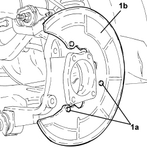

3310B59 REAR BRAKE DISC GUARD (ONE), LEFT OR RIGHT - R.R.
- Path
- Procedures > 33 BRAKES > 3310 DISC BRAKES > 3310B REAR DISC BRAKES > 3310B59 REAR BRAKE DISC GUARD (ONE), LEFT OR RIGHT - R.R.
- Kind
- repair procedure (removal / refitting; the operation number is the code)
- Applies to
- all engines; all production periods
- Interactive page
- https://sloeber94.github.io/elrnDB-aBrrSpdr/en/#/946002123
Applies to: all engines; all production periods
 Removing
Removing
 Refitting
RefittingOp. 4450B06 LEFT REAR WHEEL - R.R
Op. 3310B48 REAR BRAKE DISC (ONE), LEFT OR RIGHT - R.R.
1. Undo the bolts (1a) and remove the rear brake disc guard (1b).

Applies to: all engines; all production periods
Refitting
Removing- Place the rear brake disc shield back in its housing and secure it using the bolts.